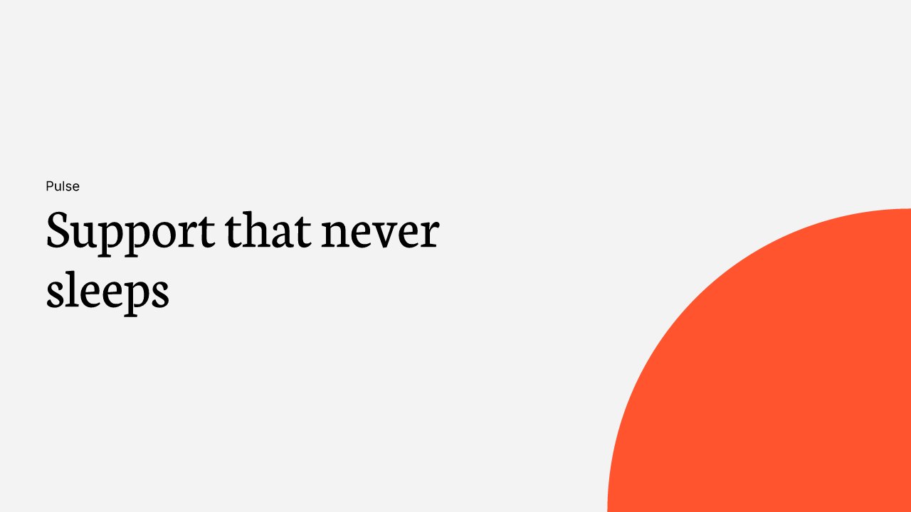
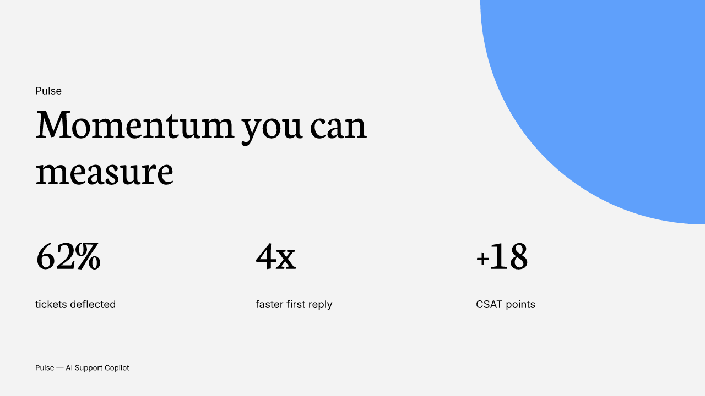
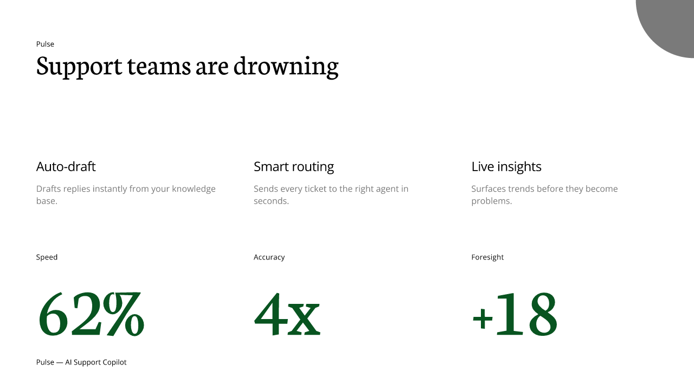
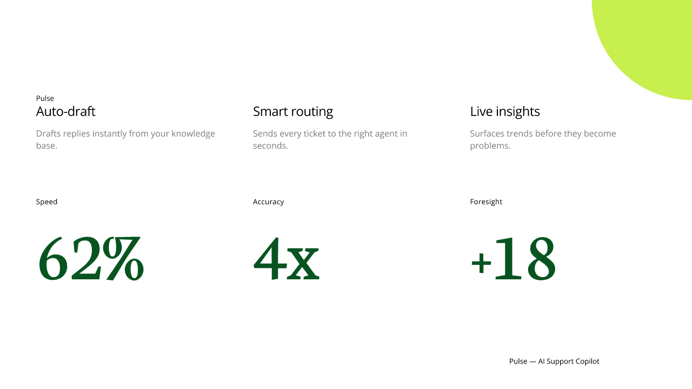
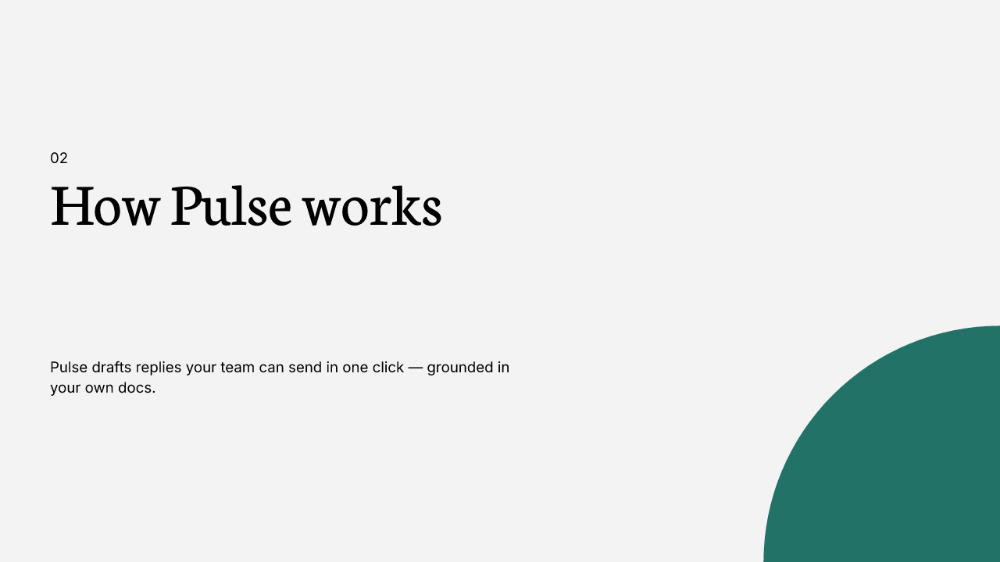
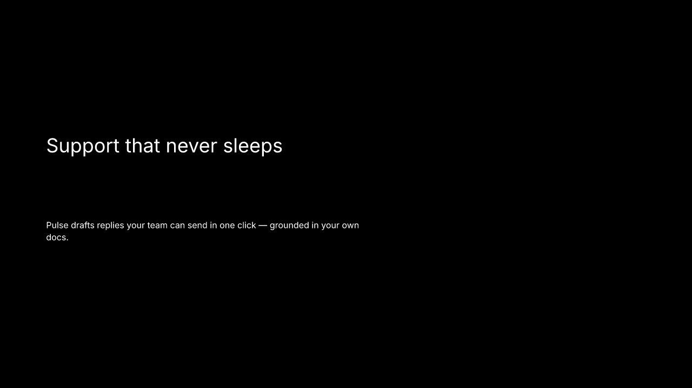
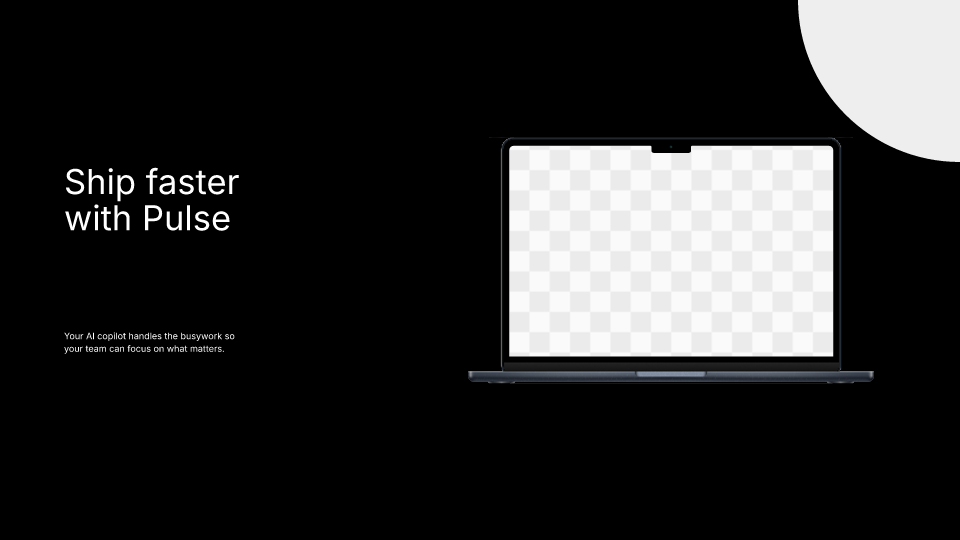
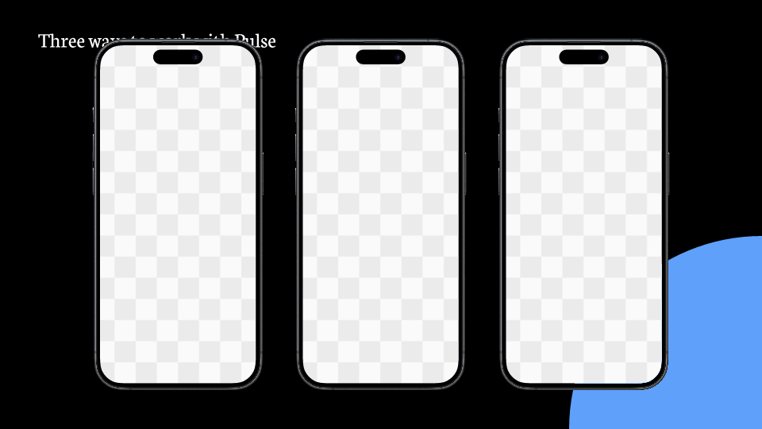
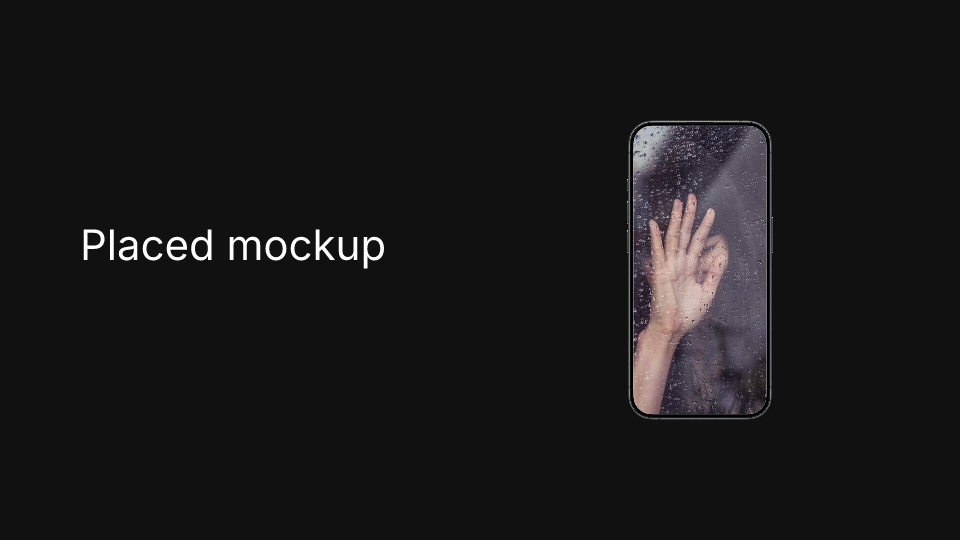

An agentic generative system
for design-grammar slide synthesis
업로드한 슬라이드를 채워 넣을 템플릿이 아니라 디자인 예시 데이터로 본다. 거기서 추출한 문법(간격·정렬·계층·컴포넌트 관계)으로 원본에 없던 새 레이아웃을 합성하는 에이전틱 시스템. 핵심 엔지니어링 결정은 하나로 요약된다 — 의미 판단은 AI, 기하 계산은 결정론 코드. Templates are example data, not fill-in forms; the LLM reasons about meaning, deterministic code owns every pixel.
How it works · 파이프라인
사용자 프롬프트(+선택적 이미지)는 STAMP에만 들어간다. BAKE에서 만든 GrammarSpec만 읽고 합성하며, 평가 게이트를 통과하지 못하면 재합성한다.
AI engineering · 책임 분리라는 한 번의 결정
이 프로젝트의 모든 구조는 한 가지 관찰에서 나온다 — LLM은 의미 판단에 강하고 수치 정밀도에 약하다. 그래서 시스템을 그 단층선(fault line)을 따라 둘로 갈랐다. 같은 프롬프트라도 좌표를 LLM이 찍으면 겹침·이탈·비재현이 생긴다. 의미는 확률적 모델에, 픽셀은 결정론 코드에 맡긴다.
- 슬롯 분류 — 번호 오버레이를 비전으로 읽어 role·mediaKind 판정
- 아키타입 선택 — 프롬프트를 슬라이드 목적으로 분해
- 콘텐츠 작성 — 레이아웃이 요구하는 정확한 블록만 생성
- 품질 비평 — 렌더된 픽셀을 다시 비전으로 평가
- 좌표 생성 — 그리드 스냅·간격 리듬·계층에서 산출
- 텍스트 측정 — opentype.js 정확 메트릭, measure=render parity
- 충돌 회피 — push-down·safe area·비겹침 보장
- 대비 보정 — 가독성 자동 교정, 디자인 floor 강제
Agentic patterns · 에이전틱 패턴
Structured tool-use as a contract
모든 AI 호출은 자유 텍스트가 아니라 tool 스키마로 강제된 타입 객체를 반환한다(ContentPlan·PlacementPlan·CritiquePatch). 파싱이 아니라 계약. 비배열·누락 출력에 대한 방어를 더해 파이프라인을 견고하게 만들었다.
Vision-in-the-loop
슬롯에 번호를 그려 비전으로 분류하고, 합성 결과를 다시 비전으로 평가한다. 텍스트 설명이 아니라 실제 렌더 픽셀을 근거로 판단해 "보기엔 깨진" 결과를 잡아낸다.
Evaluator–optimizer loop
생성 → 7지표 채점 → 미달 시 자기 수정. score < 7 → revise novelty < 6 → reject & re-synthesize N ≤ 2 (bounded)생성기와 평가기를 분리한 자기교정 루프.
Bake-once, stamp-many
비싼 AI 분석(흡수·문법 추출·비전 분류)은 테마당 1회 실행해 GrammarSpec로 캐시한다. 요청 시점에는 원본 SVG를 다시 읽지 않고 캐시만 조합 — 저렴하고 빠르고 결정론적.
Structure-first context
에이전트가 더 잘 고르도록 이미 추출한 구조를 노출한다 — 역할 의미(kpi=헤드라인 지표), 아키타입의 미디어(이 골격은 제품 UI 목업을 가짐). 비싼 의미 프롬프트를 굽는 대신 결정론적 구조를 먼저 쓴다 — 무료·환각 0·기하 우선.
Core logic · 핵심 로직
GrammarSpec
팔레트·타입스케일·정렬 그리드·간격 리듬·계층·blocks·측정 cardSpec을 하나로 구조화한 명시적 디자인 문법.
Archetype skeletons
아키타입별 예시 슬라이드의 region을 캔버스 분수로 정규화·median 집계한 패턴. 특정 프레임 복사가 아님.
Grammar-only synthesis
골격을 GrammarSpec만으로 인스턴스화. 좌표는 그리드·리듬·계층에서 생성, 카드 내부는 측정값 재사용.
Quality evaluator
7지표(문법 일관성·신규성·위계·간격·적합도·유사도 페널티·종합) 채점 + 게이트.any < 7 → revise layout novelty < 6 → reject
Decoration = theme habit
장식 양을 테마의 측정 coverage에서 결정(강제 아님). 빈 코너·여유 반경·팔레트색으로 배치 근거를 기록.
Design floor
테마 무관 기본 규약: 안전 여백(≥5%)·최소 폰트(~18px)·초점 크기(~54px)·비겹침(push-down/safe area).
Results · 합성 결과 (no frame copied · grammar-synthesized)
같은 프롬프트(Pulse — AI 고객지원 코파일럿)를 세 테마로 합성. 모두 원본 프레임을 복사하지 않고 GrammarSpec에서 좌표를 생성한다 — 장식은 테마의 측정된 습관(colorful 대담 / black 무장식), 타입·간격·계층은 추출 문법 그대로.






Design systems · 템플릿 → 정립된 시스템
각 테마의 슬라이드들을 하나의 재사용 디자인 시스템으로 증류한다 — 복사한 슬라이드가 아니라 추출된 규칙. 인스펙터는 팔레트·타입스케일·그리드/리듬·계층·blocks·아키타입 골격·장식 언어·목업을 한 페이지로 문서화한다.
생성 인스펙터(scripts/design-system.mjs)는 GrammarSpec를 디자이너 문서처럼 렌더하고, 각 골격을 실제 예시 슬라이드와 쌍으로 보여준다 — 추상 패턴과 실물을 나란히.
Device mockups · 목업 자산 (place the frame, user fills the screen)
목업(아이폰·맥북)은 틀+빈 화면 한 세트의 재사용 자산으로 추출된다. 합성 슬라이드는 프레임을 그대로 스탬프하고, 화면은 정확한 모양(둥근 모서리·노치)으로 clip된 빈 자리로 둔다 — 이미지는 우리가 만들지 않고 사용자가 직접 끼운다. 배치(개수·정렬)는 한 슬라이드의 관계 그래프에서 가져온다(예: 3-up 폰 행). black·colorful 두 테마에서 11개 목업 자산(iPhone·MacBook 등)을 추출.



Hard problems · 풀어낸 난제
Progress · 진행 현황
Built · 구축
Quality floor · 기본 규약
Open · 남은 작업
Quality journey · 품질 개선 이력
Edge hugging → safe padding
colorful 그리드 margin 31px로 텍스트가 가장자리에 붙음 → 안전 여백 = max(grid, 5%) 강제.
Tiny text → font floor
측정 카드 폰트가 12px까지 축소 → 최소 폰트(~18px)·초점(~54px) 규약.
Empty comparison → tier cards
가격 티어가 한 문장으로 뭉침 → 카드 구조 보장(Starter/Growth/Scale).
Clustered band → cohesive center
마지막 zone 뒤 phantom 갭이 그룹을 미정렬 → 실제 잉크 범위로 중앙 정렬.
Forced blob → theme habit
모든 슬라이드 같은 블롭 → 테마 측정 coverage 기반(black은 무장식 유지).
Arbitrary asset → explainable
인덱스 회전 → "가장 빈 코너 + 여유 반경 + 팔레트색" 근거 기록.
id 없는 화면 슬롯 → 디바이스 그룹 검출
colorful 목업 화면은 id 없는 path(<g id="Image"> 안)라 추출 실패(0개) → 화면을 디바이스 그룹(iPhone/MacBook) 조상으로 검출하도록 변경 → 0→5개.
renderer undefined font → grammar fallback
family 없는 역할에서 렌더가 undefined로 크래시 → GrammarSpec가 테마 기본 fontFamily를 노출해 근본 해결.
What's next · 차기 기술 로드맵
현재 결정론 배치는 안정적이지만, 다음 단계는 같은 책임 분리 위에 더 강한 도구를 얹는 것이다.
Reference diagrams · 참조 도식


Stencil · agentic generative slide synthesis — project report